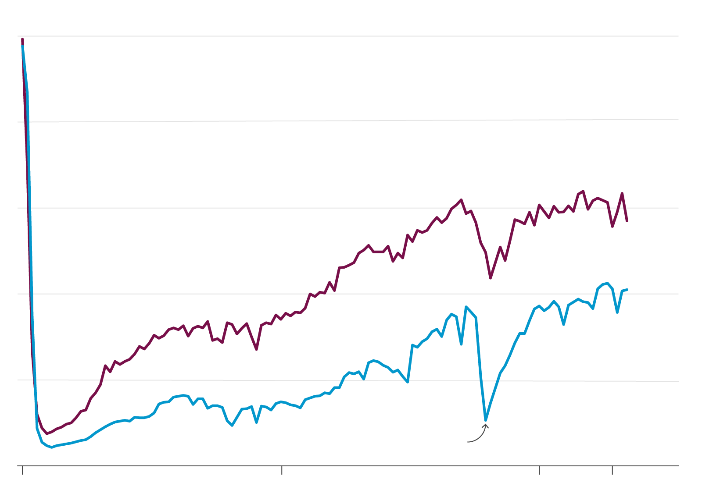
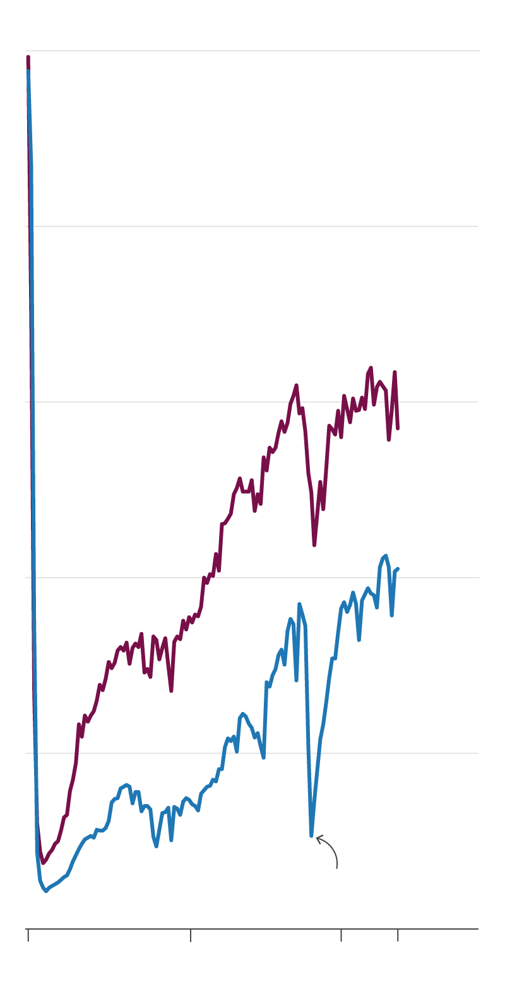
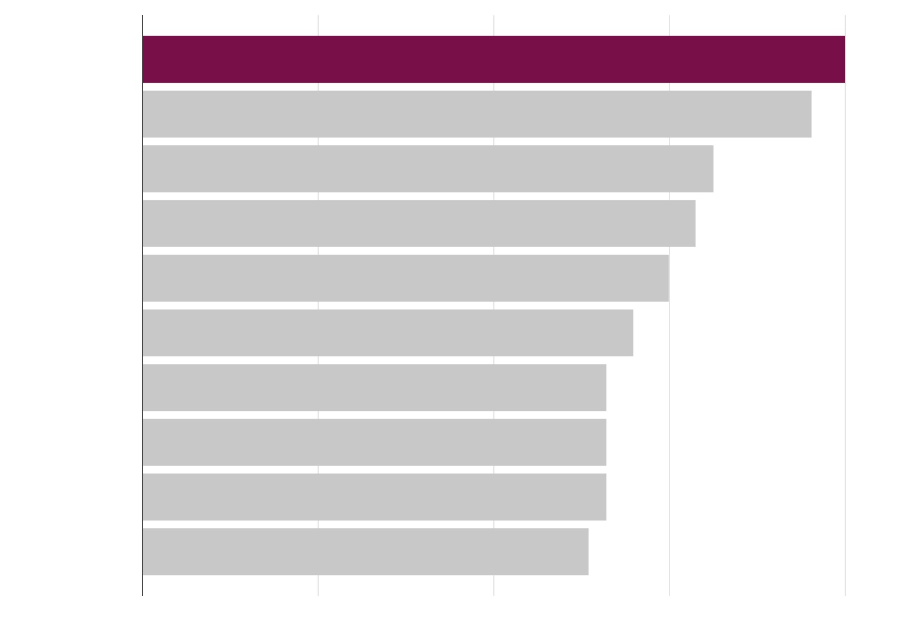
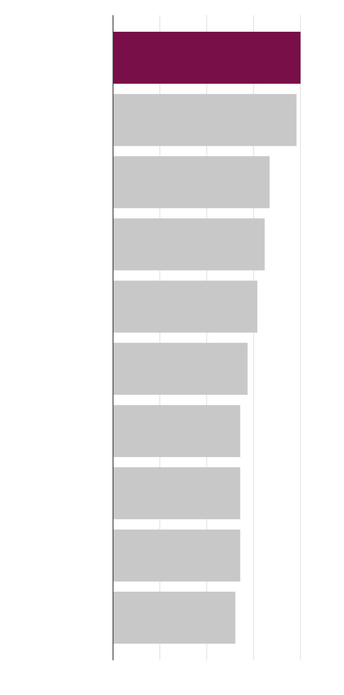
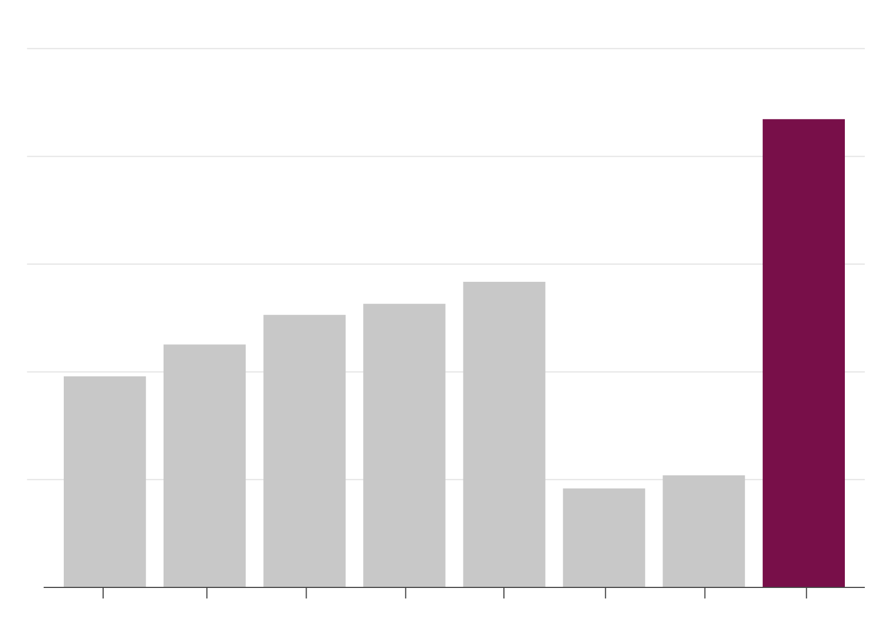
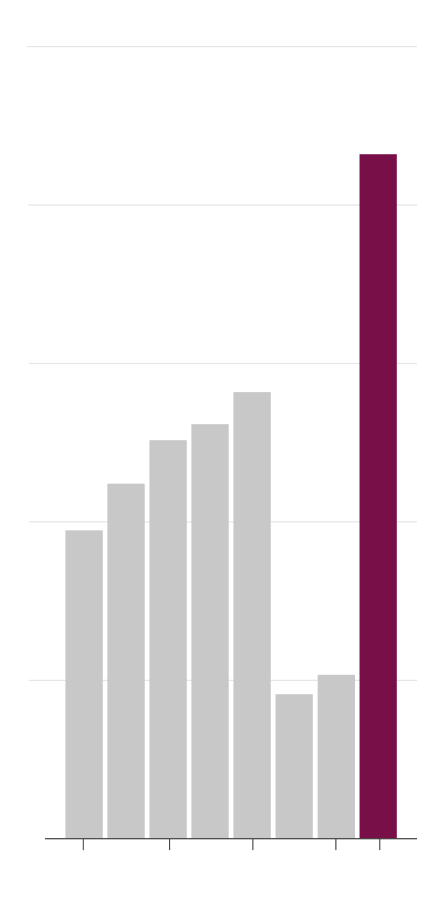
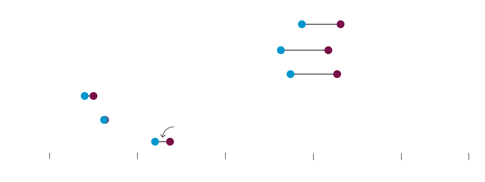

Lagging post-lockdown ridership spells trouble for NYC's iconic subway
By Prinz Magtulis
August 10, 2022
When Noelle Morcos finally decided to work fully remote for Meta in August, she weighed the costs and benefits: On one hand, she'd lose access to those famous Facebook office perks and the chance to bond with her teammates in person.
On the other, she'd have more time to walk her dog and do the other things she liked if freed from the hassle of twice-a-day commutes to the office on the subway.
Many New Yorkers have made the same choice — some like Morcos who came to embrace working from home during the pandemic and others who fear reports of rising crime. Regardless of the reason, reduced ridership has had serious repercussions for the train system.
Even now, more than a year since mobility restrictions were lifted, total ridership is only some 60% of the pre-pandemic level in 2019.
To be sure, plenty of people still use the subway. Morcos unhesitatingly boards the train on weekends, relying on its vast network to meet friends and run errands. "There's no better way to get to your destination fast and the subway is also less crowded during weekends so it's very convenient," she said.
The subway shuttles over 3.1 million passengers on average during weekdays, and nearly 2 million during weekends, according to data from the Metropolitan Transit Authority, the agency that runs the system.
While those levels fall well short of pre-pandemic times, regular riders know there are plenty of times when coaches can still be crowded with straphangers.
“That's still a lot of people,” said Yonah Freemark, senior research associate at Washington, D.C.-based Urban Institute, a think tank.
But against other metrics of the Big Apple's return to normal, subway ridership has lagged — behind retail sales, job generation and Broadway ticket sales.
In-person classes at city schools and universities have long since resumed, and droves of tourists are flying back, but the MTA has yet to see that sort of robust rebound in ridership.
Some experts question whether the subway will ever return to a pre-pandemic normal. The MTA itself has tempered the expectation. In July, the agency said its consultant, McKinsey and Co., projected that subway ridership would hit no higher than 80% of pre-pandemic levels by 2026, compared with February's forecast of 87%.
People continuing to work from home was cited as primary reason for the "substantial" decline.
Our analysis too showed that subway ridership hews closely to office occupancy rates. That greatly helps explain why even with pandemic restrictions lifted for over a year now, low passenger volumes have persisted.
Office occupancy in New York — as defined by the number of people sitting at their desks at work — has so far hovered around 40%, according to Kastle Systems, a consultancy that tracks such data on a weekly basis.
Subway ridership largely tracks office occupancy
Over two years into pandemic, remote work is keeping employees away from offices and the subway

100% of pre-pandemic level
80
Subway ridership
60
40
20
Office occupancy
Omicron surge
0
Mar 2020
Mar 2021
Mar 2022
Jul 2022

100% of pre-pandemic level
80
Subway ridership
60
40
20
Office
occupancy
Omicron surge
0
Mar
2020
Mar
2021
Jul
2022
Mar
2022
Sources: MTA, Kastle Systems
Coming on top of pre-existing fiscal problems — due to long-term underinvestment and state and federal aid that has fallen short of what transportation experts say is needed — the falloff in ridership paints a dire financial picture for the subway.
Already huge budget deficits are set to widen to $2.6 billion over the next two years, the MTA projects.
So, what's the future of the system that has been viewed as the lifeblood of the city that never sleeps? Ridership will stay subdued and will cut through MTA's earnings.
New revenue streams will have to be identified to offset losses, analysts said, while existing resources will have to be better deployed to serve those who continue to ride.
'Fundamental part of the city'
Despite the grim financial prospects however, there's no doubt that the subway is here to stay. People will continue to patronize the underground railway system, one of the largest in the world, as it remains the best way to go around the city without a more viable alternative.
"The subway plays an incredibly important role in just assuring basic daily mobility for the majority of people," Freemark said.
The remote work impact
New Yorkers have plenty of ways to get around. On the ground, buses ply the roads, cabs are hailed, and Uber rides are booked. Nearly half of the city's households also own a car.
But these alternatives get beaten by the subway for efficiency and punctuality.
Sure, the subway also gets delayed sometimes — MTA data showed that in June, passengers waited an additional 84 seconds longer than usual during peak hours on weekdays.
But unless maintenance work is ongoing or there's an accident, riders can easily estimate how long their trip will be.
Personal vehicles are of limited value at best in a city with some of the worst traffic in America. The city is so dense that there's no space to build new roads, highways or even parking lots to accommodate more vehicles.
"That's what makes the subway a fundamental part of the city," Freemark said.
New York City has the worst traffic in the U.S.
Vehicles in the city get stuck an average of 80 hours a year on traffic

New York
Los Angeles
Miami
Baton Rouge
San Francisco
Chicago
Honolulu
Seattle
Riverside
Philadelphia
0
20
40
60
80 hours

New York
Los Angeles
Miami
Baton Rouge
San Francisco
Chicago
Honolulu
Seattle
Riverside
Philadelphia
0
20
40
60
80 hours
Source: Tomtom Traffic Index 2021
And then there's affordability. Hanna Nicole Daanoy, 24, takes the F- or E-train from Queens to West Fourth Street to her work at L' Artusi restaurant in West Village daily.
Since she sends nearly a quarter of her monthly earnings to her family in the Philippines, she follows a very strict budget.
An Uber X ride going home from work would cost Daanoy roughly $20 at the minimum, nearly 10 times the subway fare, according to Uber's own fare calculator.
"I can't afford to take a cab or Uber every day. I won't be able to eat anymore," she said in jest.
While prices of everything from potatoes to real estate are on the rise, MTA fares have been steady for nearly three years now. Plans for a 4% fare hike in 2021 were dropped to ease the burden on customers reeling from the pandemic.
The fare increase was postponed again this year after state funding was hiked, helping cover for the gap in fare revenues.
Since then, ridership has improved a bit. Data showed average weekday passengers rose to 57% of their 2019 level on the third week of July, up from just about 49% same period a year ago.
Thomas Abdallah, deputy vice president and chief environmental engineer at the MTA, said with gas prices still elevated, drivers may think twice about paying more at the pump, ride the subway instead, and support ridership further.
The MTA has embarked on several efforts to attract its old patrons back, including discounts and a fare-cap mechanism.
Under the latter, commuters using the OMNY fare system ride for free after 12 trips in a week. The program has not been officially assessed, but Abdallah doubted the program would have a significant impact on ridership.
"Most people take the train 10 times a week, going to the office and back, and that's during normal times," he said, indicating that there may only be a few people qualifying to the promo.
Crimes up but still relatively rare
Safety is another issue. Crime rates have risen and perhaps more importantly, there is growing perception that riding the subway is unsafe because of several high-profile news stories of people getting shot, assaulted or pushed onto the tracks.
This, in turn, has scared off both old and new riders.
Mio Tomita arrived in June for a summer program and has been taking the 1-train from 96th Street station to Columbia. But she thought that would change when her mom and daughter were to join her in the city in mid-August. “To be honest, a lot of my colleagues here tell me not to take the subway,” said Tomita, who works as a reporter in Japan.
"If it's just me, it's okay. But my mom and daughter see the news from here and taking the subway make them scared," she added.
Subway crime rates have indeed increased during the pandemic, with the odds of being a victim rising by nearly 50%. But for any individual straphanger, the chance of mayhem is still very low.
MTA and NYPD data show that, for the first five months of 2022, 4.26 crimes had been reported per 1 million rides.
That's up from 2.78 crimes per 1 million rides reported for all of 2019.
While safety concerns are valid, Danny Pearlstein, policy communications director at the Riders Alliance commuter's group, stressed that the subway remains remarkably safe. Government data support this: riders still very rarely experience crime in the subway despite increases in crime rates over the past two years.
“Crime isn't nearly so dramatic as the focus on it would suggest,” Pearlstein said. “People by and large believe directly that they are going to be able to ride without an incident.”
Crime rates at the subway rose amid pandemic, but remain remarkably low
Less than five crimes are reported per 1 million riders

5 per million rides
4
3
2
1
0
2015
2017
2018
2019
2020
2021
2016
2022 (Jan-May)

5 per million rides
4
3
2
1
0
2017
2019
2021
2022
(Jan-May)
2015
Sources: NYPD, MTA
The city has also been responsive to safety concerns, increasing police presence in stations during peak hours.
Mayor Eric Adams also pledged to augment response teams and open more "safe haven" centers to assist riders.
For the most part however, Freemark said commuters choose to ride the subway because the benefits of convenience and timely arrival still outweigh the downsides. And this shows even among people who have grown averse of the subway:
Morcos said she doesn't foresee ditching the subway anytime soon. Daanoy said it's just impossible to do it, while Tomita said it remains an option for her when visiting as a tourist.
Shift of focus
Attracting passengers lost by the subway is good, but Abdallah said it also may be time to shift focus onto those who still ride regularly. Planning for a “new normal”, he said, entails more efficient use of subway resources.
"I don't know the exact answer," he said, but rethinking whether current peak and non-peak hours continue to reflect the new reality, given remote work, is a good starting point.
Our analysis showed that since the pandemic, the gap between peak and off-peak ridership has narrowed significantly.
Subway peak hours not as crowded now
On average, ridership during peak hours not as far from off-peak numbers as before

peak
offpeak
2017
2018
2019
2020
Gap between ridership
on peak and offpeak hours
has narrowed
2021
2022*
1
2
3
4
5
6 m
* - January to June
Source: Subway Dashboard
Meanwhile, despite recent infusions of state and federal aid, Pearlstein is advocating for more as fare revenues, which account for 28% of MTA's annual operating budget, are not projected to rise in the near future. If ridership, as MTA projects, will stay way below normal for years to come, funds used to sustain subway operations should come from elsewhere.
The MTA received $6 billion early this year for the subway as part of the American Rescue Plan.
Although the jury is still out as to what the subway's recovery will look like, New Yorkers will continue to ride the subway. "I don't think it's going to decline further," Freemark said.
And if Robert Paaswell, engineering professor at City University of New York who's done research on the subway, is to be believed, a full rebound may even be possible.
"People want to be in crowds, want to be with their office mates or go to the restaurant or bars," he said.
"People are in New York because they want to experience New York and the best way to do that is to ride the subway."
This project is in partial fulfillment of requirements for master of science degree in data journalism at Columbia University.See code and data here.